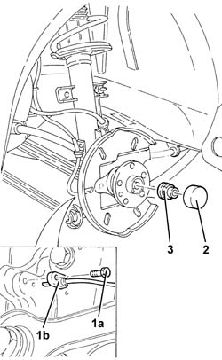
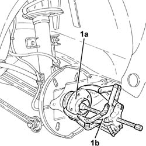
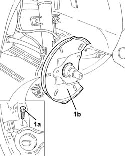
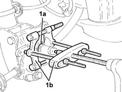
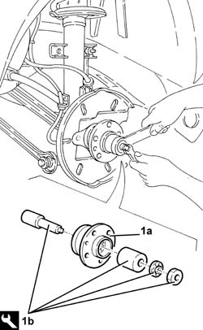
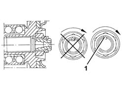

4450D10 hub of one rear wheel, l/h or r/h - r+r with wheel removed
- Path
- Procedures > 44 SUSPENSION AND WHEELS > 4450 WHEELS AND HUBS > 4450D rear wheel hubs > 4450D10 hub of one rear wheel, l/h or r/h - r+r with wheel removed
- Kind
- repair procedure (removal / refitting; the operation number is the code)
- Applies to
- all engines; all production periods
- Interactive page
- https://sloeber94.github.io/elrnDB-a147/en/#/3025377
Applies to: all engines; all production periods
 Removing
Removing
 Refitting
RefittingPosition the vehicle on the ramp.
Proceed with the removal 3310B48 rear brake disc - r r .
1. Undo the bolt (1a) and remove the rear wheel rpm sensor (1b) from its housing.
2. Remove the rear wheel hub cover.
3. Remove the bevel and undo the rear wheel hub nut.

Applies to: all engines; all production periods
1. Remove the rear wheel hub (1a) complete with bearing using a suitable commercial extractor (1b).

Applies to: all engines; all production periods
1. Undo the bolt (1a) and remove the brake disc shield (1b).

Applies to: all engines; all production periods
1. Remove the bearing outer race (1a), using a suitable commercial extractor (1b).

Applies to: all engines; all production periods
Refitting
Removing1. Refit the rear wheel hub (1a) complete with bearing using the tool (1b).
 | Name | Country |
|---|---|---|
1b | Tool for Extracting/Fitting | 1.870.665.000 |
Place the brake disc shield back in its housing and fix it using the bolt.

Applies to: all engines; all production periods
Tighten the rear wheel hub nut to the recommended torque.
 | Fastening | Component | Ø | Value (daNm) |
|---|---|---|---|---|
- | Nut | HUB WITH BEARING (WITH INSTRUMENTS) | M24 | 30.4 ÷ 33.6 |
1. Bevel the collar of the rear wheel hub retaining nut as illustrated in the diagram using a chisel.

Applies to: all engines; all production periods
Refit the rear wheel hub cap using the tool.
Replace the rear wheel rpm sensor in its housing and fix it using the bolt.
Proceed with the refitting 3310B48 rear brake disc - r r .
Remove the car from the ramp.
Proceed with the refitting 4450A40 rear wheel geometry - check using optical equipment .